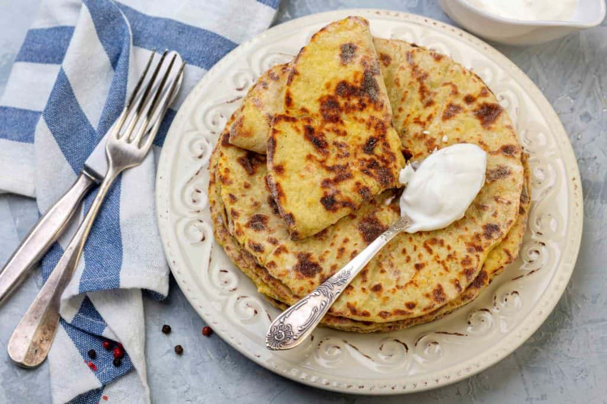

Home
Odin Recipes

Description
Delicious Cuisine meal very healthy and fantastic.
A healthy Cuisine that keeps your body strong and energetic
The cuisine relies on traditional cooking methods like smoking, pickling, and curing.
ingredients
- Fresh fish
- game(especially reindeer)
- Root vegetables
- Wild berries
- Dense rye bread
- Creamy salmon soup
- karelian pastries
Steps
- Boil water or fish stock with onions and allspice berries
- Add diced, peeled potatoes and cook until soft (about 10 minutes).
- Add cubed, fresh salmon and cook for a few more minutes until tender.
- Stir in cream and fresh dill before serving with rye bread.
- Seasonality: Use berries and mushrooms in autumn, and root vegetables in winter.
- Simplicity: Let natural flavors speak for themselves, using minimal, high-quality ingredients.
- Foraging: Use wild ingredients like cloudberries, lingonberries, or mushrooms for authentic flavors.